适用版本：1.0.4
更新日期：2026-06-18
官网：mistlab.dev · 下载：GitHub Releases
本手册面向日常使用 MistTerm 连接服务器、操作终端、传文件的用户。不涉及编译源码或参与开发；开发者文档见仓库内 docs/ 目录。
MistTerm 是一款 SSH 终端客户端，帮助您：
支持 Windows 与 macOS。
MistTerm-*-windows-x86_64-setup.exe，双击安装.dmg，拖入「应用程序」文件夹安装后无需单独安装 OpenSSH；连接远程 Linux 服务器即可使用。
启动后会出现主窗口：左侧为会话列表，中间为工作区（连接后显示终端），顶部为菜单，底部为状态栏。
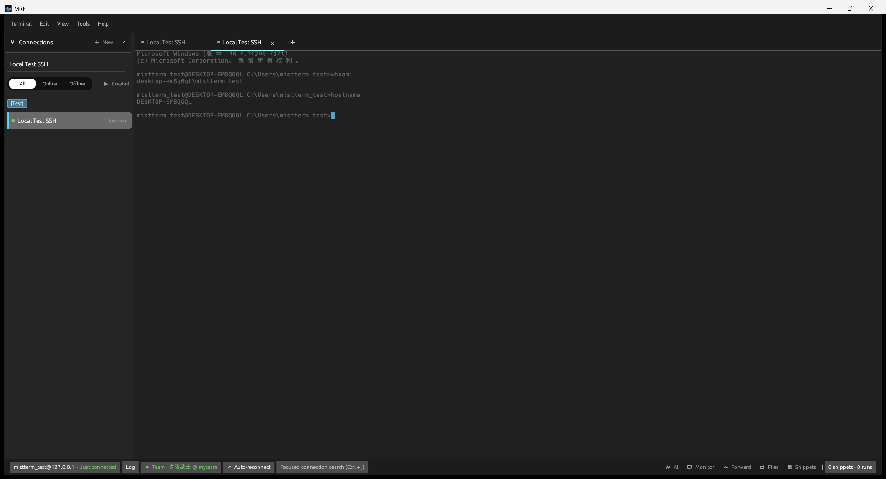
图 2-1：已连接服务器时的主界面
连接、密码、片段等配置保存在本机用户目录（已加密），例如：
%APPDATA%\mistterm\~/Library/Application Support/mistterm/请勿手动编辑这些文件；在应用内修改即可。
| 步骤 | 操作 |
|---|---|
| 1 | 按 Ctrl+N（Mac：⌘N）打开「新建会话」 |
| 2 | 填写名称、主机 IP/域名、端口（默认 22）、用户名、密码或密钥 |
| 3 | 点击 保存并连接，或在侧栏双击该会话 |
| 4 | 在中间终端输入命令，如 ls、cd、top |
| 5 | 需要传文件时：菜单 视图 → SFTP，或点击底栏 Files |
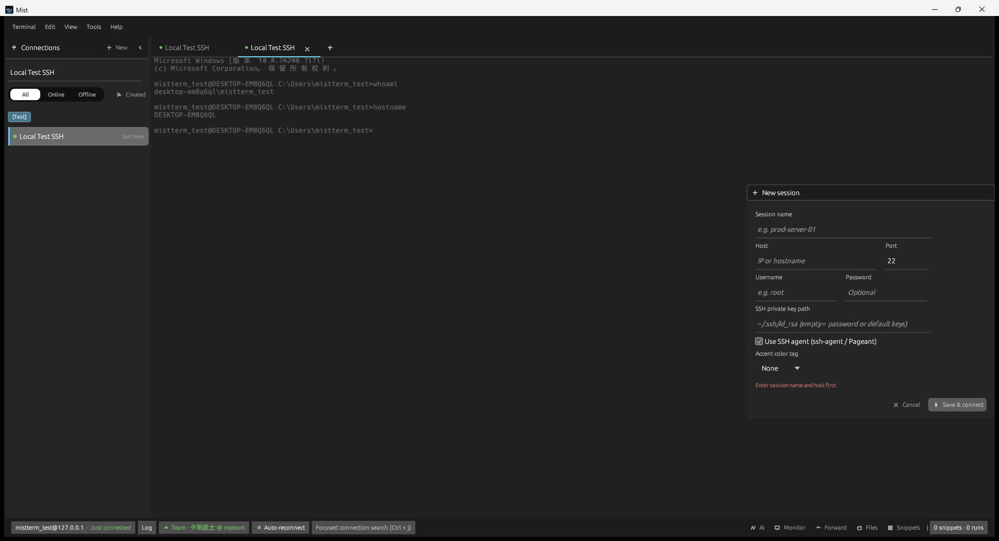
图 3-1：新建会话
| 区域 | 位置 | 说明 |
|---|---|---|
| 顶栏菜单 | 窗口顶部 | 终端、编辑、视图、工具、帮助 |
| 会话列表 | 左侧 | 已保存的连接，支持分组与搜索 |
| 工作区 | 中间 | 终端标签页；连接后在此输入命令 |
| 侧面板 | 右侧（按需打开） | SFTP、监控、片段、AI 等 |
| 状态栏 | 窗口底部 | 连接信息，以及 AI / Monitor / Forward / Files / Snippets 快捷入口 |
| 想做什么 | 怎么打开 |
|---|---|
| 新建/编辑连接 | Ctrl+N / 侧栏选中后 Ctrl+E |
| 打开 SFTP | 视图 → SFTP 或底栏 Files |
| 看 CPU/内存 | 视图 → 监控 或底栏 Monitor |
| 命令片段 | Ctrl+K 或底栏 Snippets |
| AI 助手 | Ctrl+Shift+A 或底栏 AI |
| 偏好设置 | Ctrl+, |
| 帮助与快捷键 | 帮助 → 快速入门 / 键盘快捷键 或 Ctrl+H |
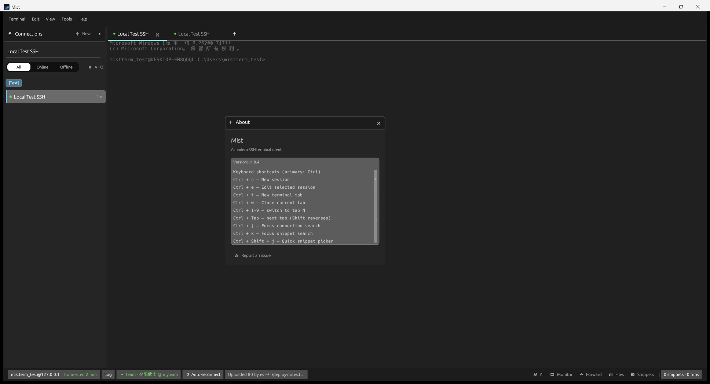
图 4-1：侧栏会话列表（可分组、搜索）
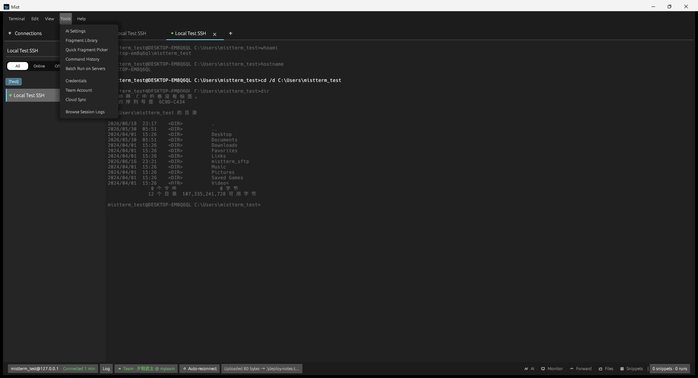
图 4-2：视图菜单 — 切换各侧面板
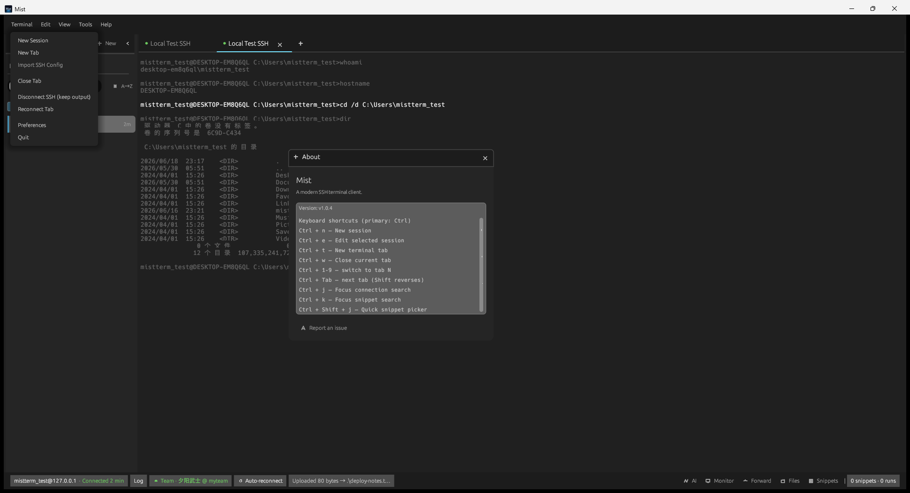
*图 5-1：也可通过 终端 → 导入 SSH Config 从已有 ~/.ssh/config 批量导入*
| 方式 | 适用场景 |
|---|---|
| 密码 | 服务器允许密码登录 |
| 私钥文件 | 本机 .pem / id_ed25519 等 |
| SSH Agent | 已启动 ssh-agent / Pageant，密钥已加载 |
| 跳板机 | 在高级选项中填写 ProxyJump（与 OpenSSH 相同） |
用户名@主机 · 已连接 表示成功密码和会话信息在本地加密保存，换电脑需重新配置或恢复备份。配置文件为加密格式，用记事本打开会看到乱码，属正常现象。
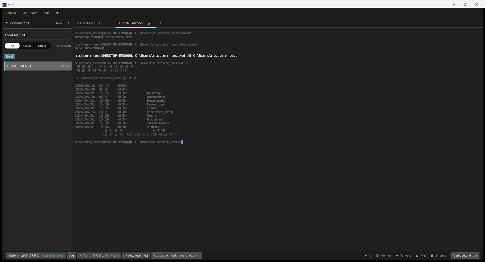
图 6-1：终端中执行命令
图 6-2：终端内查找
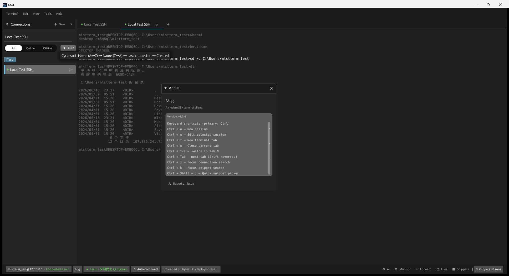
图 6-3：命令历史窗口
打开方式：菜单 视图 → SFTP，或底栏 Files。
界面分为本机与远程两栏：
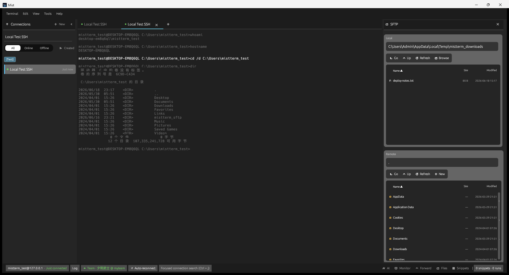
图 7-1：SFTP 双栏文件管理
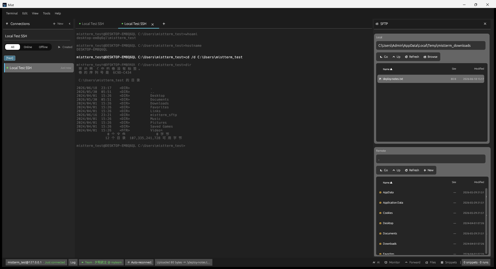
图 7-2：上传完成后底栏提示
典型流程 — 上传文件到服务器：
下载则反向操作：选中远程文件 → 下载到本机当前目录。
若服务器已安装 lrzsz，可在终端里：
# 从本地上传文件到当前远程目录（执行后按提示选择文件）
rz -bye
# 从远程下载文件到本机
sz 文件名MistTerm 会自动接管传输并显示进度。若传输异常，请确认远端使用 rz -bye，并检查防火墙是否中断长连接。
将常用命令存为片段，需要时一键插入，支持 <变量名> 占位符。
| 方式 | 说明 |
|---|---|
| Ctrl+K | 聚焦片段搜索 |
| Ctrl+Shift+J | 快速片段选择器 |
| 底栏 Snippets | 打开右侧片段面板 |
| 工具 → 命令片段库 | 管理、新建、编辑片段 |
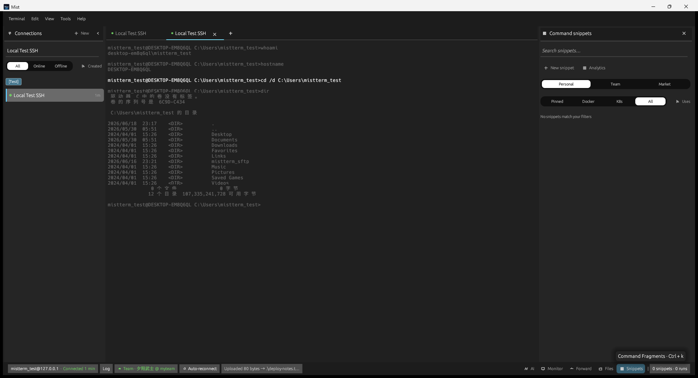
图 8-1：底栏打开片段侧栏
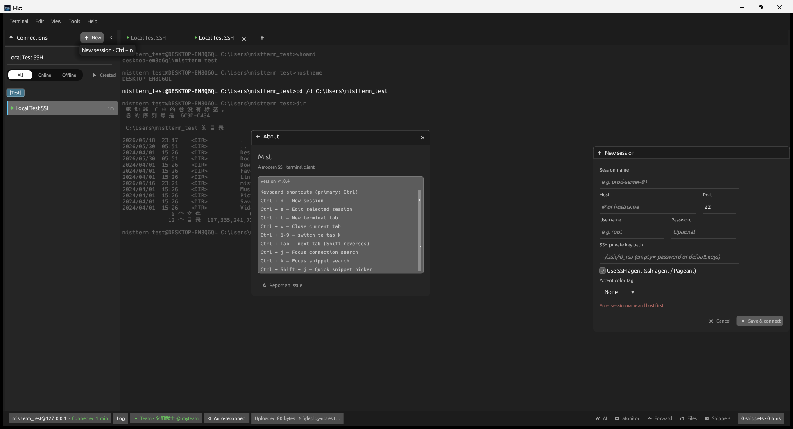
图 8-2：片段库 — 新建与编辑
片段内容示例：
kubectl logs -f deployment/<服务名> -n <命名空间>执行时会弹出输入框，填好变量后自动替换并发送到终端。
若已登录 MistLab 团队账号，可使用团队共享片段（见第 11 节）。
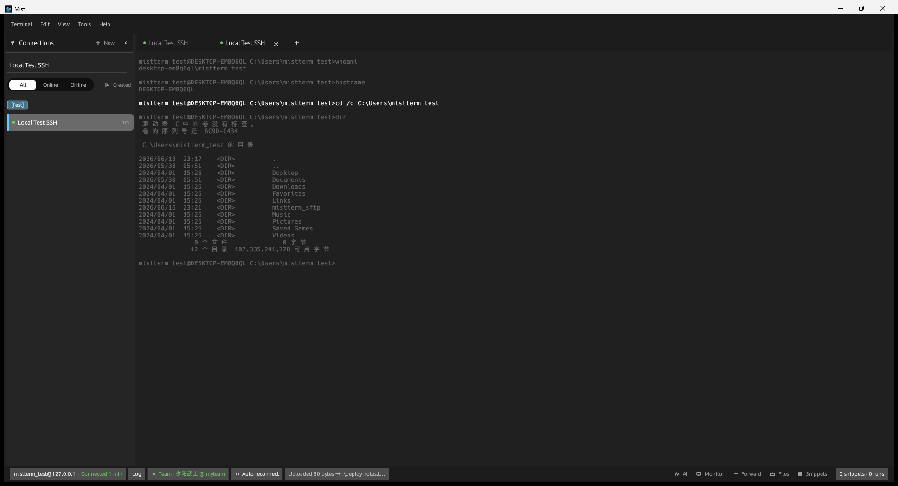
图 9-1：主机监控
监控依赖 SSH 连接。若连接断开，图表会停止更新；重新连接即可。
本地端口:目标主机:目标端口远程端口:目标主机:目标端口图 9-2：端口转发管理

图 10-1：AI 设置
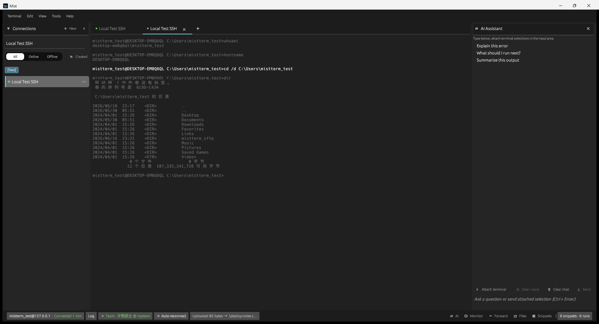
图 10-2：AI 助手对话
图 10-3：工具菜单 — AI、片段、批量执行、凭证等
面向使用 MistLab 团队版 的用户：
未登录团队时，所有个人功能照常使用。
MistTerm 可在危险命令发送到服务器之前进行提示或拦截（取决于您的规则与团队策略）：
| 行为 | 说明 |
|---|---|
| 拦截 | 如 rm -rf / 等极高风险命令无法发送 |
| 确认 | 弹窗询问「是否继续」 |
| 告警 | 允许执行但记录告警 |
可在 偏好设置 中查看或调整本地规则。加入团队后，管理员下发的策略会同步到本机。
工具 → 凭证：集中保存服务器账号、数据库、API Token 等，供会话或片段引用。默认本地加密存储。
在偏好设置中可开启会话日志，自动保存终端交互记录，便于事后审计。可通过 工具 → 浏览会话日志 查看。
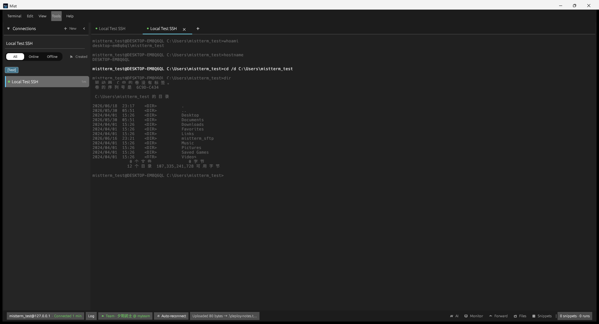
图 13-1：偏好设置
图 13-2：关于 Mist
工具 → 批量执行：选择多台已保存的主机，输入同一条命令并行执行，适合巡检（结果分主机显示，过长输出会自动截断）。
以下以 Windows 为例；macOS 将 Ctrl 换为 ⌘ 即可（如 Ctrl+N → ⌘N）。
| 快捷键 | 功能 |
|---|---|
| Ctrl+N | 新建会话 |
| Ctrl+E | 编辑所选会话 |
| Ctrl+T | 为所选会话新建终端标签 |
| Ctrl+W | 关闭当前标签 |
| Ctrl+Tab / Ctrl+Shift+Tab | 下一 / 上一标签 |
| Ctrl+1 … Ctrl+9 | 切换到第 N 个标签 |
| Ctrl+J | 聚焦连接搜索（侧栏） |
| Ctrl+K | 聚焦片段搜索 |
| Ctrl+Shift+J | 快速片段选择器 |
| Ctrl+F / F3 | 终端内查找 |
| Ctrl+R | 命令历史搜索（终端内） |
| Ctrl+Shift+A | AI 助手面板 |
| Ctrl+Shift+L | 终端选区发送到 AI |
| Ctrl+Shift+D / Ctrl+Shift+U | 终端左右 / 上下分屏 |
| Ctrl+, | 偏好设置 |
| Ctrl+H | 关于与快捷键说明 |
| Esc | 关闭当前弹窗、菜单 |
完整列表以应用内 帮助 → 键盘快捷键 为准。
图 14-1：应用内帮助 — 快速入门
ssh 命令测试）lrzsz（which rz）rz -byeApplication Support/mistterm/，可手动删除前往 GitHub Issues 描述现象、版本号与操作系统，勿在 issue 中粘贴密码或密钥。
*MistTerm v1.0.4 用户手册 · MistLab*